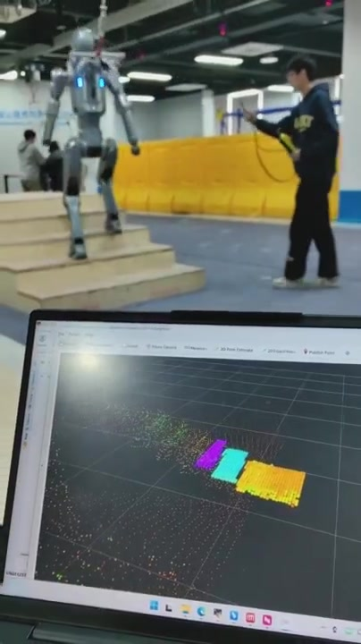

点云
空间采样与时间戳
LOCAL TERRAIN PERCEPTION
融合点云、IMU 与里程计，生成局部高度图，为楼梯落足规划提供地形输入。
我的工作开发高度图框架，完成同步补偿、点云处理与地形输出。

场景演示 · 运动中的楼梯高度图
SYSTEM / 整体框架
先统一时间与坐标，再融合观测并输出局部高度图。
空间采样与时间戳
机身姿态四元数
常规位姿与高频位姿
姿态插值 / 运动补偿
滤波 / 多帧累积 / 射线清理
高度估计 / 邻域补洞
5 cm 网格，通过 DDS 发布
结合当前位姿使用地形信息
METHOD / 核心思路
同时处理机身姿态变化、观测缺口和历史点残留。
同步点云与姿态，插值四元数并做重力对齐；输出阶段补偿当前位姿。
裁剪、法线过滤与降采样后累积多帧；八叉树多线程射线清理历史残留。
每格用 z 值的 80% 分位数估计高度，邻域补洞处理稀疏区域。
DEMO / 楼梯场景
上下楼梯素材展示局部地形的层次、补偿与持续更新。
上下楼梯场景 · 高度图模块输出
以局部高度表达呈现不同台面的高度关系。
机器人姿态变化时，持续对齐地形观测。
随着机器人靠近楼梯，更新前方地形输入。